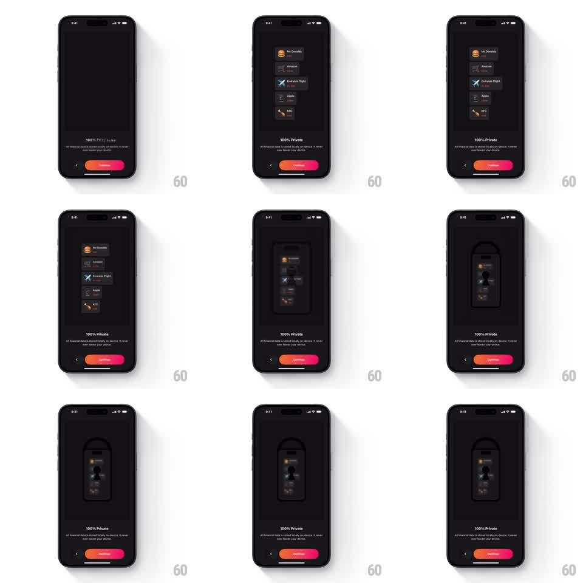

Media
Frame-by-frame

Rebuild this animation 1:1: Finma's 100% Private onboarding - the transaction list (Mc Donalds, Amazon, Emirates Flight, Apple, KFC) assembles, then shrinks, blurs, and morphs into a padlock illustration, the data visibly sealed inside the lock.

Rebuild this animation 1:1: Finma's 100% Private onboarding - the transaction list (Mc Donalds, Amazon, Emirates Flight, Apple, KFC) assembles, then shrinks, blurs, and morphs into a padlock illustration, the data visibly sealed inside the lock. ## Integration Integration: stack-agnostic spec - springs given as stiffness/damping, timed motions as duration + curve; map every value to your framework and animation library of choice. ## Scene Dark "100% Private" page: "All financial data is stored locally on device, it never even leaves your device" subcopy, pager, back chevron, gradient Continue pill. The stage: a transaction list with merchant logos (Mc Donalds, Amazon, Emirates Flight, Apple, KFC) that condenses into a padlock - the lock's body forming around the blurred list, shackle drawing closed on top. ## Motion spec Pattern: list-to-lock morph with blur seal. - Entrance: the transaction rows stagger in (translateY 12pt -> 0, 60ms apart, 250ms each) with their logos popping (scale 0.7 -> 1). - Seal: the list scales down (1 -> 0.55, 500ms, ease-in-out) toward center while blurring (0 -> 12pt) - the data becoming unreadable as it shrinks. - The padlock body draws around the blurred core (stroke trim, 400ms), the shackle arcs closed last (stroke trim, 300ms, ease-in) with a small lock-settle bounce (scale 1 -> 1.04 -> 1, spring ~340/14) and a faint glow pulse (opacity 0.3 -> 0.6 -> 0.3, 400ms). - The blurred transactions remain dimly visible inside the lock body - sealed, not deleted. - The cycle holds (1s), then can loop: shackle opens (250ms), list unblurs and regrows (400ms). ## Calibration - Blur is the privacy metaphor's core - the list must be illegible before the shackle closes. - The lock is a dark line illustration; the only color inside it is the merchant logos' muted blur. ## Reduced motion The list fades into the lock illustration (300ms) without scaling or blur animation. ## Don't miss - The shackle closes after the body - the sequence is gather, blur, body, shackle. - The Continue pill stays put through the whole morph.